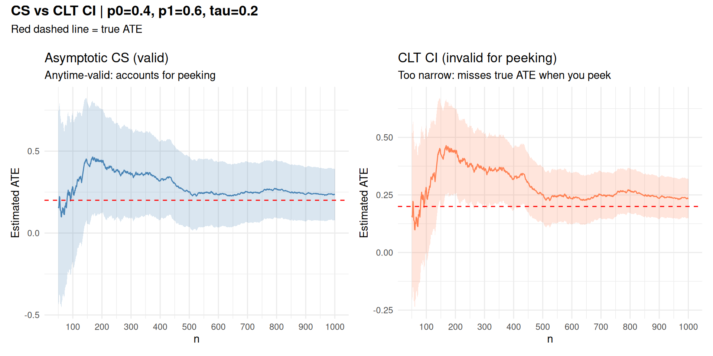
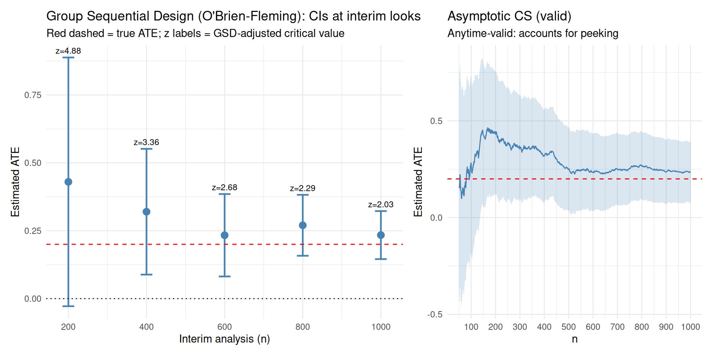

First, why should we do sequential testing? Why not just prespecify \(n\)?
We can calculate the number of samples using a power calculation (Boardwork)
[1] "\alpha 0.0384772455724324"[1] "1-\beta: 0.907466218485276"Recall, using the SPRT we had on average less than 40 samples. Power calculations indicate we should have 77 samples.
There is a theorem, which is hard to write down exactly, but I call it the Always Do Sequential Testing Theorem Wald and Wolfowitz (1948).
If you pick \(n\) via a power calculation, on average you could have gotten away with fewer samples had you used a sequential test instead.
Platforms like Statsig implement the SPRT and it is quite easy to use.
You have a dataset \(X_1, X_2, \ldots, X_n \sim N(\mu, 1)\). You calculate \[ \dot C_n(X_1, \ldots, X_n) = \hat \mu \pm \frac{1.96}{\sqrt{n}} = [1.5, 5] \] Can you reject the null \(\mu = 0\)?
What if you observe a sequence of data \(X_1, X_2, \ldots \sim N(\mu, 1)\). You construct \(\dot C_1, \dot C_2, \ldots \dot C_{67}\). \[ 0 \in \dot C_i, \forall i < 67 \quad \text{ but } 0 \not \in \dot C_{67}. \] Can you stop at 67 and reject the null that \(\mu = 0\).
Confidence sequences Waudby-Smith et al. (2024) — the sequential analogue of CIs
Valid at all sample sizes, no matter when you peek
\[ \mathsf{P}\!\left(\forall\, n \in \{0, 1, \ldots\} : \mu \in \bar C_n(X)\right) \geq 1 - \alpha \] \[ \forall\, n \in \{0, 1, \ldots\},\quad \mathsf{P}\!\left(\mu \in \dot C_n(X)\right) \geq 1 - \alpha \]
We consider a simple randomized experiment:
| Parameter | Value | Description |
|---|---|---|
| \(n\) | 1000 | Total samples |
| \(p_0\) | 0.4 | Mean under control |
| \(p_1\) | 0.6 | Mean under treatment |
| \(e\) | 0.5 | Propensity score |
| \(\tau = p_1 - p_0\) | 0.2 | True ATE |
The IPW estimator is \(\phi_i = \frac{Z_i Y_i}{e} - \frac{(1-Z_i)Y_i}{1-e}\)
robbins_confseq
library(ggplot2)
library(patchwork)
running_sd <- function(x) {
n <- seq_along(x)
M2 <- numeric(length(x))
mu <- cumsum(x) / n
for (t in 2:length(x)) {
d <- x[t] - mu[t - 1]
M2[t] <- M2[t - 1] + d * (x[t] - mu[t])
}
sqrt(pmax(M2 / pmax(n - 1, 1), 1e-10))
}
robbins_confseq <- function(x, alpha = 0.05, rho = 1) {
n <- seq_along(x)
mu_hat <- cumsum(x) / n
s_n <- running_sd(x)
radius <- s_n * sqrt(
(2 * (n * rho^2 + 1) / (n^2 * rho^2)) *
log(sqrt(n * rho^2 + 1) / alpha)
)
data.frame(lower = mu_hat - radius, upper = mu_hat + radius)
}# --- Parameters ---
set.seed(7)
n <- 1e3; p0 <- 0.4; p1 <- 0.6; e <- 0.5
tau <- p1 - p0
Z <- rbinom(n, 1, e)
Y <- ifelse(Z == 1, rbinom(n, 1, p1), rbinom(n, 1, p0))
phi <- Z * Y / e - (1 - Z) * Y / (1 - e)
cs <- robbins_confseq(phi)
ns <- 1:n
mu_hat <- cumsum(phi) / ns
clt_hw <- qnorm(0.975) * running_sd(phi) / sqrt(ns)
df <- data.frame(
t = ns,
ate = mu_hat,
cs_lo = cs$lower, cs_hi = cs$upper,
clt_lo = mu_hat - clt_hw,
clt_hi = mu_hat + clt_hw
)[50:n, ]
p1_plot <- ggplot(df, aes(t)) +
geom_ribbon(aes(ymin = cs_lo, ymax = cs_hi), alpha = 0.2, fill = "steelblue") +
geom_line(aes(y = ate), color = "steelblue") +
geom_hline(yintercept = tau, color = "red", linetype = "dashed") +
scale_x_continuous(breaks = seq(0, max(df$t), by = 100)) +
labs(x = "n", y = "Estimated ATE", title = "Asymptotic CS (valid)",
subtitle = "Anytime-valid: accounts for peeking") +
theme_minimal()
p2_plot <- ggplot(df, aes(t)) +
geom_ribbon(aes(ymin = clt_lo, ymax = clt_hi), alpha = 0.2, fill = "coral") +
geom_line(aes(y = ate), color = "coral") +
geom_hline(yintercept = tau, color = "red", linetype = "dashed") +
scale_x_continuous(breaks = seq(0, max(df$t), by = 100)) +
labs(x = "n", y = "Estimated ATE", title = "CLT CI (invalid for peeking)",
subtitle = "Too narrow: misses true ATE when you peek") +
theme_minimal()
p1_plot + p2_plot +
plot_layout(widths = c(1, 1)) &
plot_annotation(
title = sprintf("CS vs CLT CI | p0=%.1f, p1=%.1f, tau=%.1f", p0, p1, tau),
subtitle = "Red dashed line = true ATE",
theme = theme(
plot.title = element_text(size = 14, face = "bold", margin = margin(b = 6)),
plot.subtitle = element_text(size = 11, margin = margin(b = 12))
)
)
library(gsDesign)
# 5 equally-spaced interim analyses with O'Brien-Fleming spending
gs <- gsDesign(k = 5, test.type = 2, alpha = 0.025, beta = 0.1, sfu = sfLDOF)
interim_times <- c(200, 400, 600, 800, 1000)
gsd_df <- do.call(rbind, lapply(seq_along(interim_times), function(i) {
t <- interim_times[i]
x <- phi[1:t]
mu <- mean(x)
se <- sd(x) / sqrt(t)
z_crit <- gs$upper$bound[i] # GSD-adjusted critical value at this look
data.frame(t = t, ate = mu,
lo = mu - z_crit * se,
hi = mu + z_crit * se,
z_crit = round(z_crit, 2))
}))
ggplot(gsd_df, aes(x = t)) +
geom_errorbar(aes(ymin = lo, ymax = hi), width = 30, color = "steelblue", linewidth = 0.8) +
geom_point(aes(y = ate), color = "steelblue", size = 3) +
geom_text(aes(y = hi, label = paste0("z=", z_crit)), vjust = -0.6, size = 3) +
geom_hline(yintercept = tau, color = "red", linetype = "dashed") +
geom_hline(yintercept = 0, color = "black", linetype = "dotted") +
scale_x_continuous(breaks = interim_times) +
labs(
x = "Interim analysis (n)",
y = "Estimated ATE",
title = "Group Sequential Design (O'Brien-Fleming): CIs at interim looks",
subtitle = "Red dashed = true ATE; z labels = GSD-adjusted critical value"
) +
theme_minimal() + p1_plot +
plot_layout(widths = c(7, 5))
Questions? Reach me at chasehmathis.github.io
| Topic | Reference |
|---|---|
| Group Sequential Designs | Jennison & Turnbull |
| E-values & anytime-valid inference | Ramdas & Wang (2024) |
| Confidence sequences | Waudby-Smith et al. (2024) |